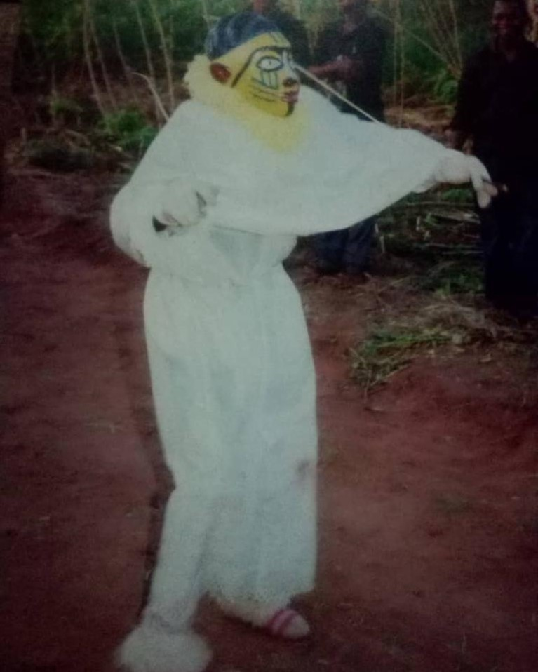
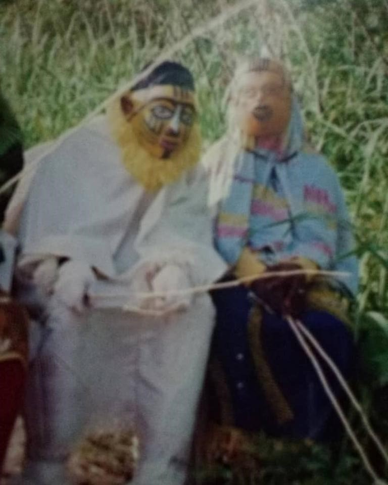
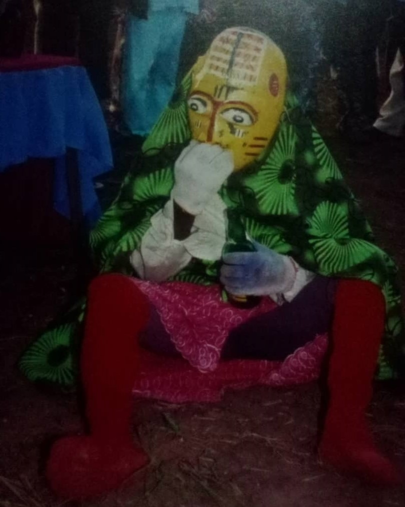
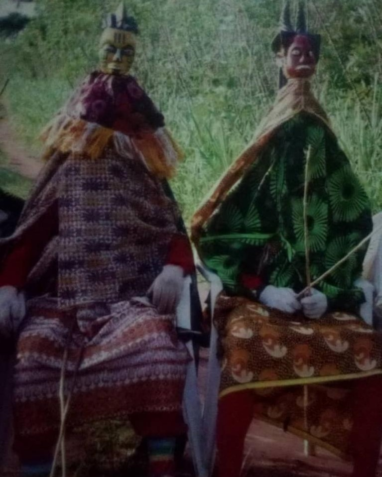
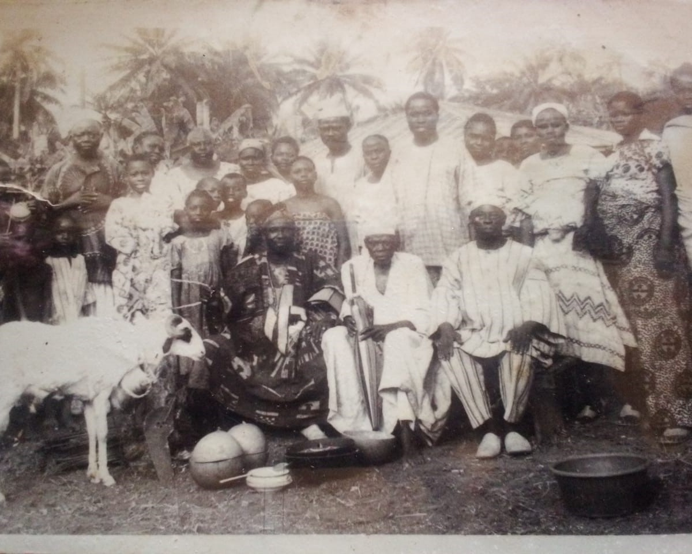
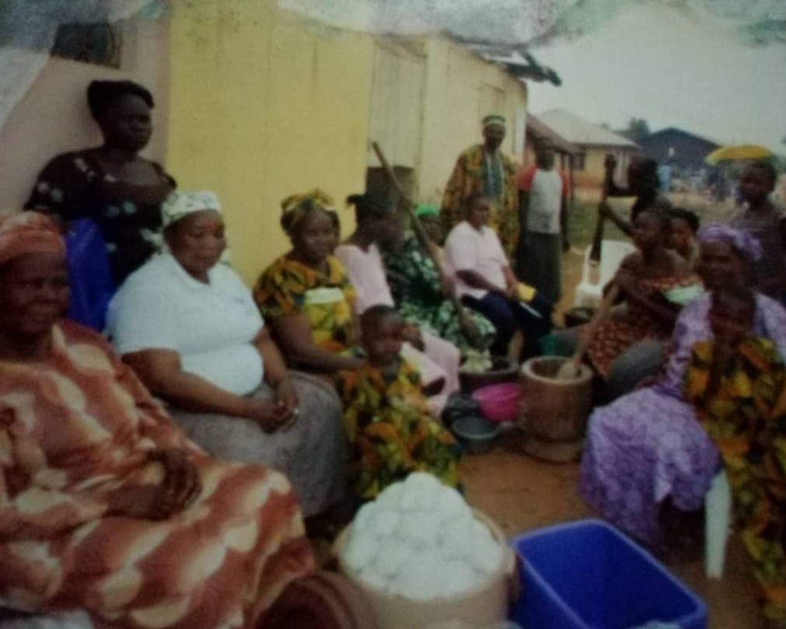
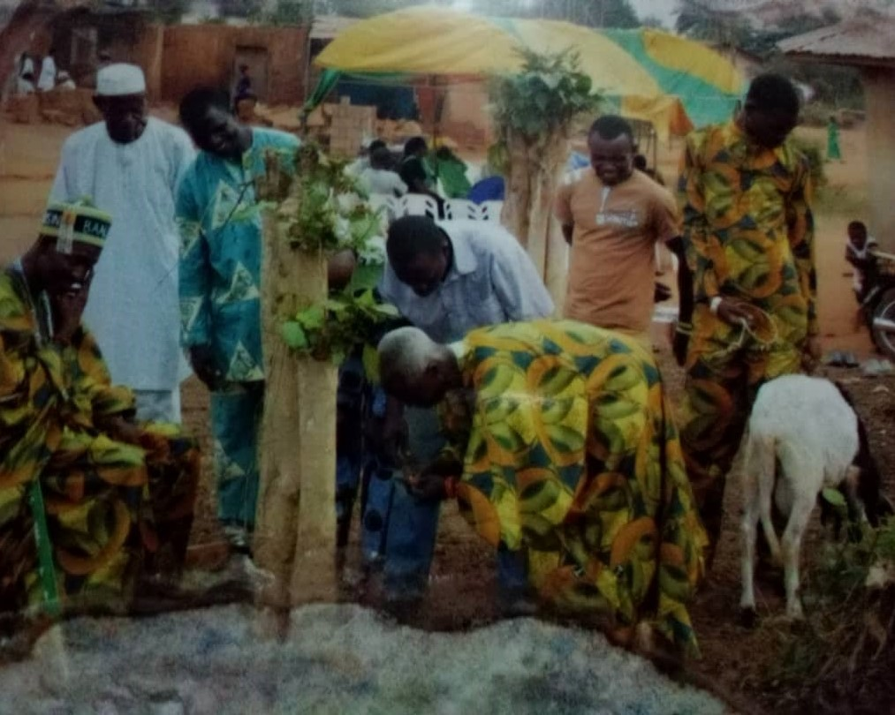
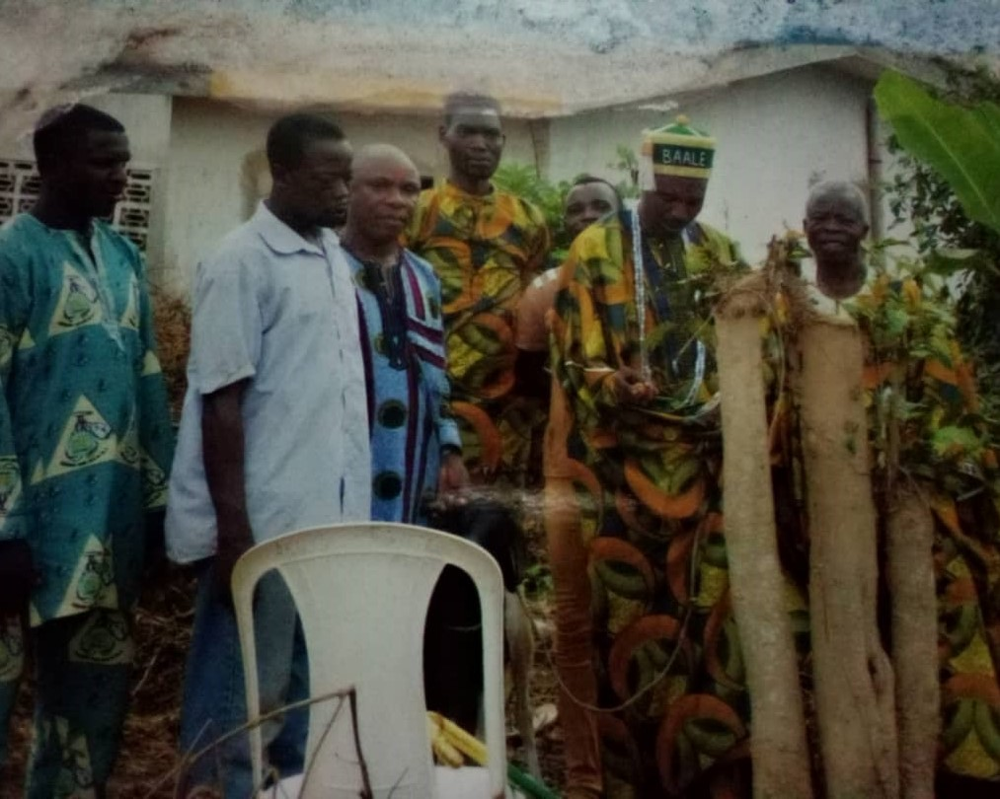

The cultural activities performed in our land include the following:
This occurs every Saturday before Easter celebration. It showcases several masquerades being celebrated in Ipebi, it involves prayers, dance and lots of merriment
   This is celebrated within the late parts of January and early February. This celebration is used to remember the founder of the community, Still in practice till today. Ram is always used to celebrate alongside eating of pounded yam and Egusi soup.
   celebrated every November
celebrated every August/ September
Ipebi is known for hospitality and peace, also known for its farming prowess and local sponge making